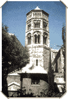

The San Donato church, dating back to the 12th and 13th centuries, was placed under the protection of St Donatus, the martyred bishop of Arezzo.
The church is home to several important paintings, including the
Madonna
by
Niccolo
da Voltri
and a magnificent triptych
by the Flemish painter
Joos Van Cleve
, representing the worship of magi.
